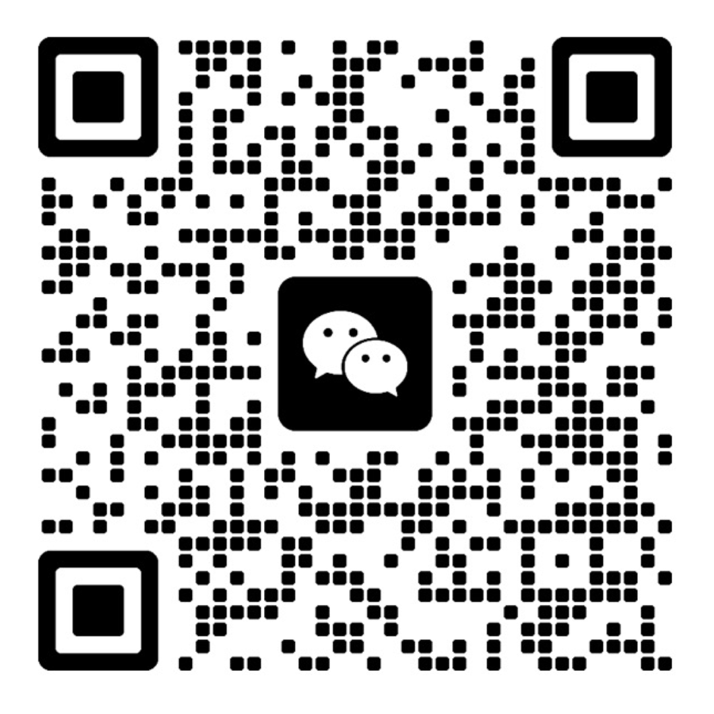

没问完的问题
诊疗时间有限，想问的事没问清，回国后才发现还有疑问。
没问清、没听清，不必带着担心回国。
想问的没问完，听到的说明拿不准——有过这样的经历吧？
WHAT'S AT STAKE
在陌生的医疗环境里，下面这些情况都可能发生。
诊疗时间有限，想问的事没问清，回国后才发现还有疑问。
注意事项、禁忌与复诊时间若听错或漏听，可能影响术后护理。
同意书、费用与方案没完全理解就签字，事后容易产生分歧。
WHAT WE DO
根据科室、沟通难度、时间与地点匹配合适的口译员，让客户、医生与协调方始终在同一页。
门诊、检查、方案说明、术前沟通与术后复诊，全流程现场陪同。
清楚传达项目差异、风险、预期、禁忌与护理重点。
支持多门店、多客户与多时段安排，减少排班和沟通断点。
诊断书、检查报告、同意书、术后指导及机构资料翻译。
OUR APPROACH
在陌生的国家面对医疗决定，紧张是很正常的。我们先理解就诊目的与您的顾虑，再准确传达、确认重点、减少误解。
结合科室、项目与客户顾虑理解真正意图。
不夸大、不省略，保留医生说明的专业边界。
整理关键问题，帮助双方确认理解一致。
一句话可以被翻译，但一次医疗决定需要被真正理解。
WHO WE SUPPORT
FOR PATIENTS
不熟悉韩国医疗流程，也能有条理地完成咨询、检查与复诊。
FOR CLINICS & AGENCIES
按客群、科室与排班需求协调合适口译员，稳定客户沟通体验。
HOW IT WORKS
只需先提供科室、时间与地点。我们会确认需求后再匹配，不需要立即决定。
科室 · 日期 · 地点 · 所需范围
核对难度、时长与行程细节
按经验、科室与时间安排
陪同沟通，必要时整理后续重点
个人资料、就诊信息与现场沟通内容均按保密原则处理，仅用于本次服务安排。
如实传达医生的说明，不添加、不美化。
口译员不提供医疗建议，治疗与费用由您与医生决定。
范围与报价确认后才开始服务，可先咨询，无需立即决定。
SELECTED SCENARIOS
以下为示例场景，并非真实个案，仅用于说明我们如何提供支持。
第一次在韩国做皮肤项目咨询，担心听不懂项目差异和恢复期。我们逐项传达医生的说明，并把您想问的问题提前列好，当场确认。
重点：选择依据清晰术前与复诊最怕漏掉风险和护理要点。我们准确传达风险、预期与术后护理，并在结束前与您再次确认理解一致。
重点：风险信息不遗漏为诊所或服务机构协调多名口译员，统一变更与现场沟通窗口。
重点：减少排班断点FAQ
没有找到答案？可以先发送科室、日期和地点，我们会确认后回复。
可覆盖初诊、检查说明、项目或手术咨询、术前沟通、术后复诊与护理说明，按实际需要安排。
可以先提交时间、地点与科室，我们会优先确认可用口译员并尽快回复。是否可安排以当日档期为准。
根据时长、地点、科室难度、是否需要多日程排班及文件准备等因素报价，确认后再开始服务。
口译员遵循保密原则，个人资料和诊疗内容仅用于服务安排与现场沟通，不对外公开。
可以。支持按门店、科室、客群和时段建立长期协作流程，也可先从单次服务开始。
支持诊断书、检查报告、同意书、术后指导等中韩翻译。请先发送文件类型与页数确认范围。
不会。口译员只负责准确传达，不提供医疗建议，也不替医生或您做决定。治疗与费用由您与医生决定。
不会。我们遵循不夸大、不省略的原则，保留医生说明的专业边界。
可以先告诉我们就诊目的与顾虑，我们协助整理需要向医生确认的问题清单。
不需要。可以先发送科室、日期与地点了解情况，确认后再决定是否开始。
START A CONVERSATION
通过微信发送“科室 / 日期 / 地点”，我们会根据情况确认可安排范围。
cmdlabkr@gmail.com 免费下载《就诊前问题清单》（PDF）P.S. 还没决定也没关系。先下载清单，带着问题去就诊，会更安心。
